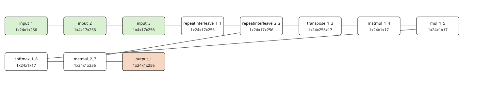

PyTorch execution / Tool guide
TorchLens
Start from a Python call such as torch.matmul. Find its tensor parents, inspect output shapes and values, and see the underlying ATen operations PyTorch dispatched.
Inspect the native graph

Try three lookups
- Follow a call. In the interactive study, select Query × keys. Expand the ATen list to find the batch matrix multiplication and inspect its two input shapes.
- Inspect a value. Choose query head 0 and cached position 8 in the bar chart. The token “ so” receives about 26.84% of this head’s weight. Change heads to compare distributions over the same cache.
- Find a module. In the whole-model browser, compare decode blocks 2 and 3. Block 2 uses linear attention. Block 3 introduces full attention. Select an operation and follow a parent to its producing module.
Capture your own module
Install the pinned version with the workspace recipe. The example enables ATen recording so you can inspect the dispatches inside a Python operation. Each saved output consumes memory. Use save="none" for a metadata-only run.
./install.sh torchlens
.local/tools/torchlens/.venv/bin/pythonimport torch
import torchlens as tl
from torchlens.options import CaptureOptions
model = torch.nn.Softmax(dim=-1)
trace = tl.trace(model, torch.tensor([[1., 2., 3.]]),
capture=CaptureOptions(aten_ops=True))
op = next(iter(trace.ops))
print(op.label, op.parents, op.shape, op.out)
print(op.aten_ops)
tl.export.svg(trace, "softmax.svg")Repeat the Qwen trial
The first command reads the supplied configuration and uses PyTorch meta tensors for the complete text path. The second reads the saved real attention inputs, compares the result with the shared reference and embeds both investigations in the standalone HTML. Both commands run from the workspace root.
py=.local/tools/torchlens/.venv/bin/python
study=topics/qwen-forward-pass/torchlens
"$py" "$study/structure.py"
"$py" "$study/replay.py"What the trial exercised
TorchLens supplied the shapes, dependency labels, activation values, ATen records, byte estimates, SVG and native HTML report. The study adds the step controls, graph layout, token-position chart and block browser. The native HTML used its built-in schematic because the Graphviz executable was unavailable. The independent SVG export rendered directly.
The tool also supports saved gradients and interventions. This inference trial used forward capture. Its memory estimates come from tensor geometry. To compare elapsed CPU events for this workload, open the other investigations in the study.
Trial notes · Setup details · Pinned PyPI release · Upstream guide · Original paper